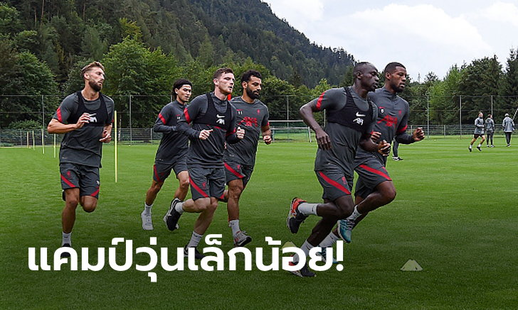
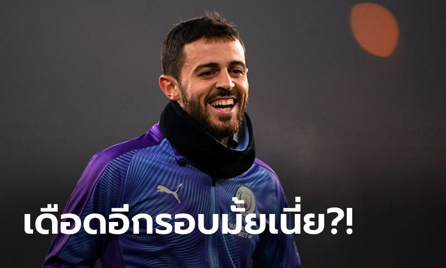
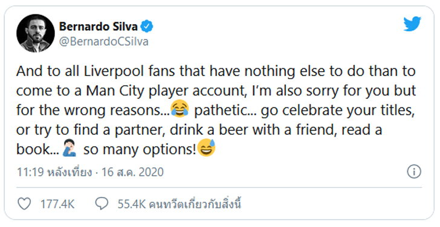
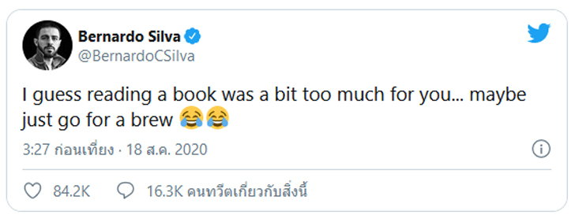
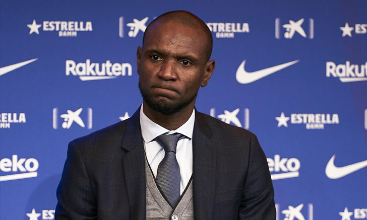
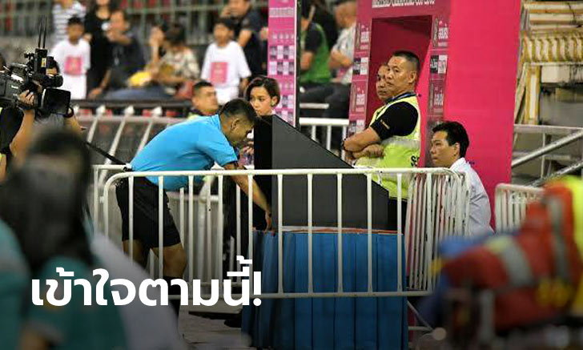
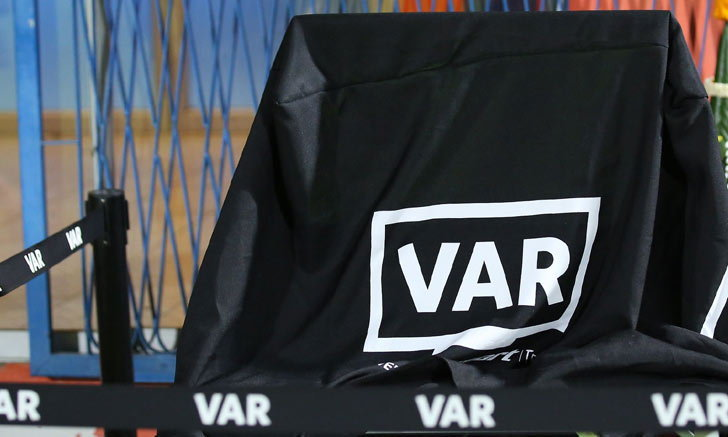

ใครหนอ?! สื่อเผย "1 สมาชิกทีมลิเวอร์พูล" ติดโควิด-19 ที่ออสเตรีย
Kronen Zeitung สื่อท้องถิ่นรายงานว่า มีสมาชิก 1 คนในทีมลิเวอร์พูล ติดเชื้อโควิด-19 ระหว่างเข้าแคมป์ปรีซีซั่น ที่ประเทศออสเตรีย โดยไม่มีการเปิดเผยว่าเป็นนักเตะ, สตาฟฟ์โค้ช หรือเจ้าหน้าที่ทีม
ด้านโฆษกสโมสรหงส์แดงยังไม่ได้ปฎิเสธหรือยืนยันกับข่าวที่ออกมา โดยเผยกับ เดอะ มิร์เรอร์ สื่อเมืองผู้ดีแค่ว่าทีมจะยังคงอยู่เข้าแคมป์ต่อไปตามโปรแกรมเดิมตลอดสัปดาห์นี้ และเล่นเกมอุ่นเครื่องปรีซีซั่น ก่อนกลับอังกฤษ เพื่อทำศึกชิงโล่ คอมมิวนิตี้ ชิลด์ กับ อาร์เซนอล ที่สนาม เวมบลีย์ วันเสาร์ที่ 29 ส.ค.
ทั้งนี้ ลิเวอร์พูลมีแผนจะเดินทางไปเก็บตัวที่เมืองเอเวียง ประเทศฝรั่งเศส ซึ่งเป็นแคมป์เก็บตัว 2 ปีที่ผ่านมา แต่จากสถานการณ์ของโรคระบาด ทำให้ต้องปรับแผนเดินทางมาที่ประเทศออสเตรียแทน
คุณภาพ! "นิโคล" ยัน "ติอาโก้" มีทักษะจ่ายบอลเหนือกว่าแข้งหงส์แดงทุกคน
สตีฟ นิโคล ตำนานแบ็คขวาเลือดหงส์แดง ยืนยันว่า ติอาโก้ อัลคันทารา เป็นมิดฟิลด์ที่มีทักษะการจ่ายบอลเหนือกว่านักเตะ ลิเวอร์พูล ชุดปัจจุบันทุกคน แต่ถ้าย้ายมาจริงก็ต้องเรียนรู้การเล่นเพรสซิ่งตามปรัชญา เยอร์เกน คล็อปป์ ให้ถ่องแท้ด้วยเช่นกัน
"ทักษะการจ่ายบอลของ ติอาโก้ อัลคันทารา สูงมากจนหาคนมาเปรียบเทียบได้ยาก แต่ปัญหาคือรูปแบบการเล่นของแผงมิดฟิลด์ ลิเวอร์พูล เน้นไล่กดดันเพื่อแย่งบอลกลับมาเล่นสวนกลับด้วยความไวปานสายฟ้าแลบ ฉะนั้นต้องใช้พลังงานเยอะกว่าปกติหลายเท่า" เจ้าตีนโต กล่าวกับ ESPN
"อย่างไรก็ตาม ด้วยความที่ไม่มีใครในทีม ลิเวอร์พูล ชุดปัจจุบันจ่ายบอลได้แม่นเท่า ติอาโก้ อีกแล้วทั้งลูกสั้น-ลูกยาว ผมจึงเชื่อว่า คล็อปป์ จะสามารถหาสูตรที่ลงตัวกับเขาได้หากมีการเซ็นสัญญาจริง"
"แต่สุดท้าย ไม่ว่าใครก็ตามที่ย้ายเข้ามาอยู่ในระบบเรา จะต้องปรับสไตล์ให้เล่นเกม เคาน์เตอร์เพรสซิ่ง ได้อย่างสมบูรณ์แบบด้วย ซึ่งนั่นคือหนทางเดียวที่จะช่วยให้ ติอาโก้ ยึดตำแหน่งตัวจริงสำเร็จ"
ยังไม่จบ! "แบร์นาร์โด" โพสต์แซะแฟนบอลหงส์แดงต่อเนื่อง
แบร์นาร์โด ซิลวา ดาวเตะทีมชาติโปรตุเกส ของแมนเชสเตอร์ ซิตี้ ยังคงออกมาแซะแฟนบอลลิเวอร์พูลอีกรอบ หลังถูกเดอะ ค็อป บางคนเยาะเย้ยในโซเชียลมีเดีย ในเกมที่เรือใบสีฟ้า ร่วงตกรอบ 8 ทีมสุดท้ายศึกยูฟ่า แชมเปี้ยนส์ลีก
ซึ่งก่อนหน้านี้แข้งวัย 26 ปี ได้ออกมาทวีตข้อความแล้วรอบนึงแล้วว่า "ถึงแฟนบอลลิเวอร์พูลทุกคนที่ไม่มีอะไรจะทำนอกจากเข้ามายังโซเชียลของนักเตะแมนฯ ซิตี้ ผมรู้สึกเสียใจกับพวกคุณจริงๆ แต่มันเป็นเหตุผลที่ไม่ถูกต้อง น่าสมเพช ไปฉลองแชมป์ของพวกคุณเถอะ หรือไม่ก็ไปหาคู่หูสักคน,ไปดื่มเบียร์กับเพื่อน, อ่านหนังสือ ตัวเลือกเยอะแยะ"
ล่าสุด แบร์นาร์โดได้ออกมาทวีตถึงแฟนบอลลิเวอร์พูลอีกครั้งว่า "ผมเดาว่าการอ่านหนังสือคงเป็นเรื่องที่ยากเกินไปสำหรับพวกนาย ซึ่งมันก็อาจจะเหลือแค่การดื่มเบียร์ก็ได้นะ"
บาร์ซ่า ประกาศแยกทาง "อาบิดาล" จากตำแหน่งผู้อำนวยการกีฬา
บาร์เซโลน่า ตัดสินใจแยกทางกับ เอริก อาบิดาล จากความล้มเหลวในการทำงานด้านบริหาร ตั้งแต่ยุคของเทรนเนอร์ เอร์เนสโต้ บัลเบร์เด้ มาจนถึง กีเก้ เซเตียน ที่เสียแชมป์ลาลีกาไปให้ เรอัล มาดริด และตกรอบ 8 ทีมสุดท้าย ยูฟ่า แชมเปี้ยนส์ ลีก ด้วยการแพ้ต่อ บาเยิร์น มิวนิค แบบน่าขายหน้า 2-8
“บาร์เซโลน่า และ เอริก อาบิดาล บรรลุข้อตกลงร่วมกันในการยุติสัญญาด้วยความยินยอมทั้งสองฝ่าย สโมสรขอขอบคุณ เอริก อาบิดาล สำหรับความเป็นมืออาชีพ ความมุ่งมั่น อุทิศตนเอง และความสัมพันธ์ที่ดีกับทุกภาคส่วนในครอบครัว เบลากราน่า” แถลงการณ์ของ บาร์ซ่า ระบุ
อย่างไรก็ตาม ยังไม่มีการเปลี่ยนแปลงตำแหน่งของ รามอน ปลาเนส ที่ก่อนหน้านี้ทำหน้าที่ร่วมกันกับ อาบิดาล ในถิ่น คัมป์ นู
ส.บอลไทย ยืนยัน ทีมไหนใช้ VAR ต้องจ่ายเองตามเดิม พร้อมระบุนัดที่จะใช้ ภายใน 21 ส.ค. นี้
ตามที่ สมาคมฯ ได้แถลงให้ทราบเรื่องการงดใช้ VAR ช่วยในการตัดสินฟุตบอลลีกอาชีพ ฤดูกาล 2020 เพื่อลดภาระค่าใช้จ่าย หลังได้รับผลกระทบจากวิกิฤตโควิด-19 ยกเว้นในนัดสำคัญๆ อาทิ รองรองชนะเลิศ หรือรอบชิงชนะเลิศฟุตบอลถ้วย ซึ่งทางสมาคมฯ จะเป็นผู้ดำเนินการออกค่าใช้จ่ายเองทั้งหมดนั้น

กรณีดังกล่าวไม่กระทบกับสโมสรสมาชิก ที่มีความประสงค์จะขอใช้ VAR และยินดีออกค่าใช้จ่ายเอง แต่อย่างใด
โดยขอให้สโมสรแจ้งรายละเอียดนัดที่จะใช้ให้สมาคมกีฬาฟุตบอลฯ ทราบ ภายในวันศุกร์ที่ 21 สิงหาคม นี้
เพื่อสมาคมกีฬาฟุตบอลฯ จะได้ดำเนินการในส่วนที่เกี่ยวข้อง และขออนุมัติจากทางสหพันธ์ฟุตบอลนานาชาติต่อไป
ทั้งนี้ สโมสรที่แจ้งความประสงค์ขอใช้ VAR จะเป็นผู้รับผิดชอบค่าใช้จ่ายที่เกิดขึ้นทั้งหมดนั้น ยังคงเป็นไปตามเดิม และเป็นคนละส่วนที่สมาคมจะออกค่าใช้จ่ายในการใช้ VAR ในบางนัดที่แจ้งให้ทราบไปก่อนหน้านี้